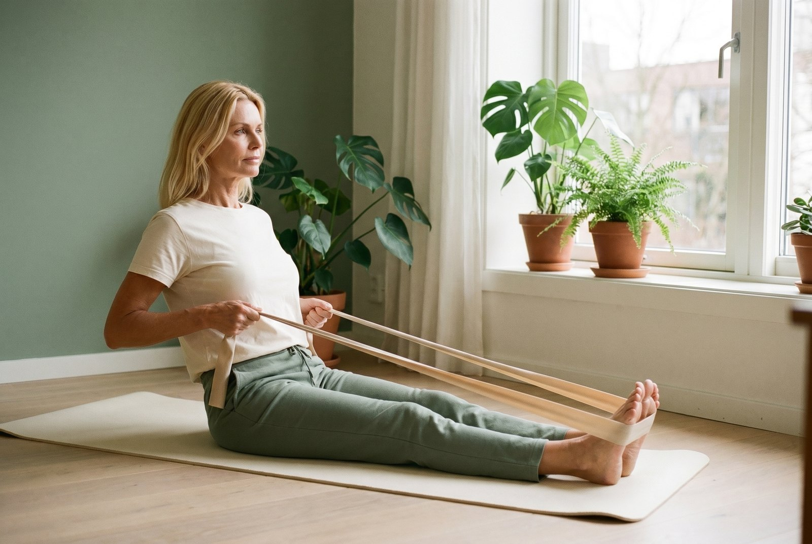
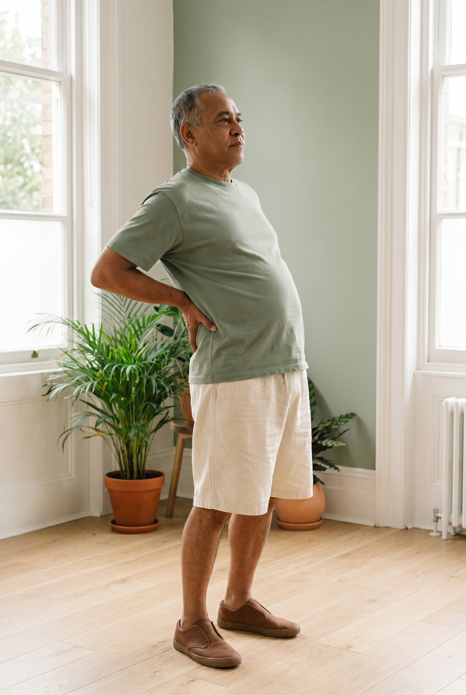
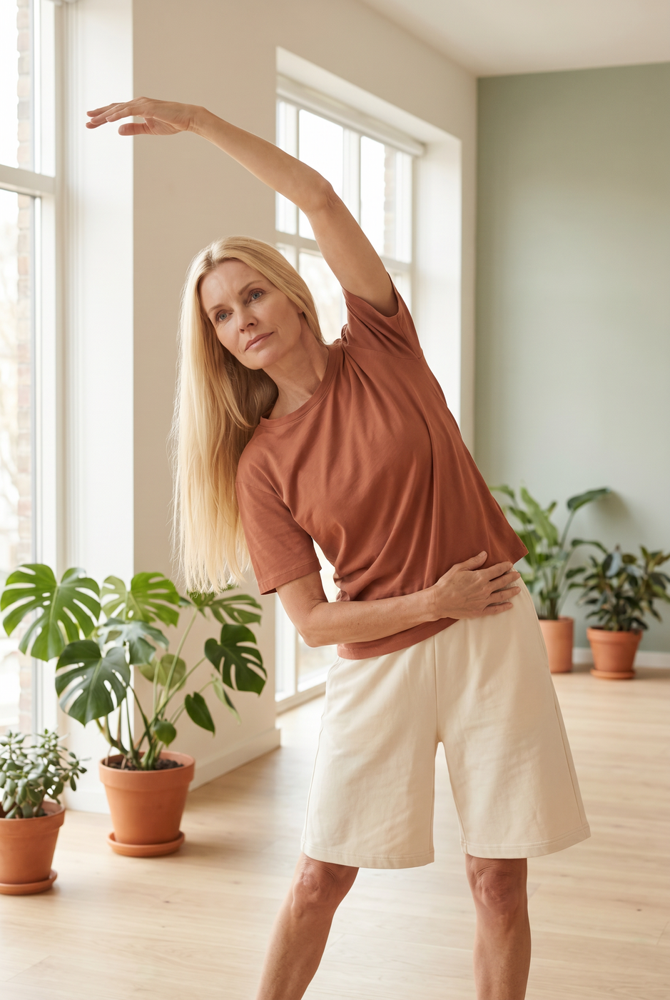
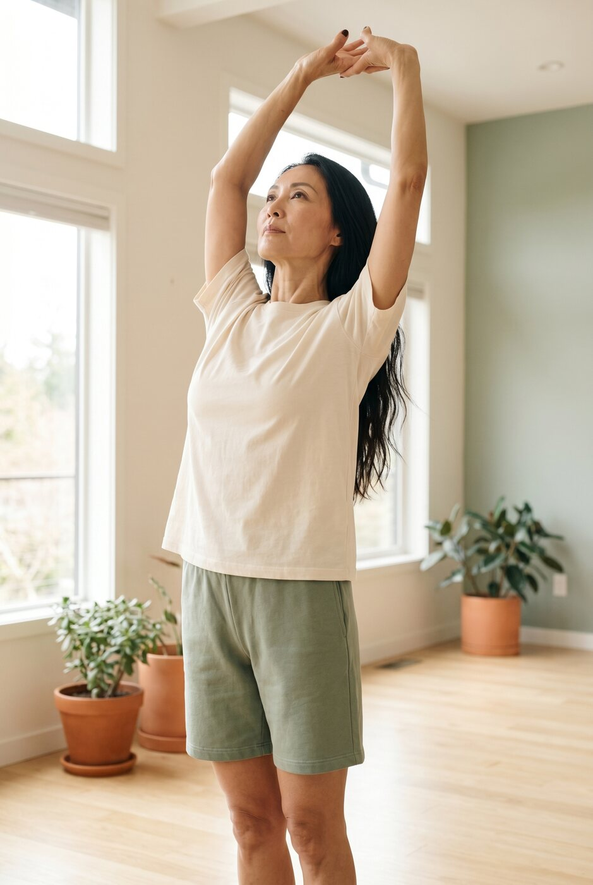
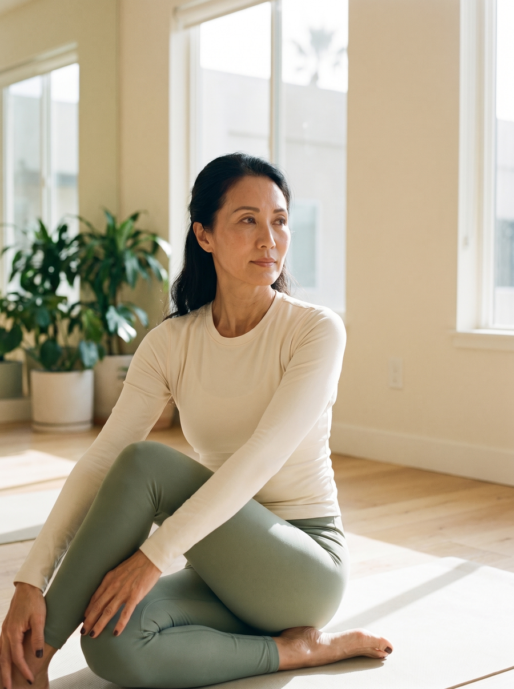
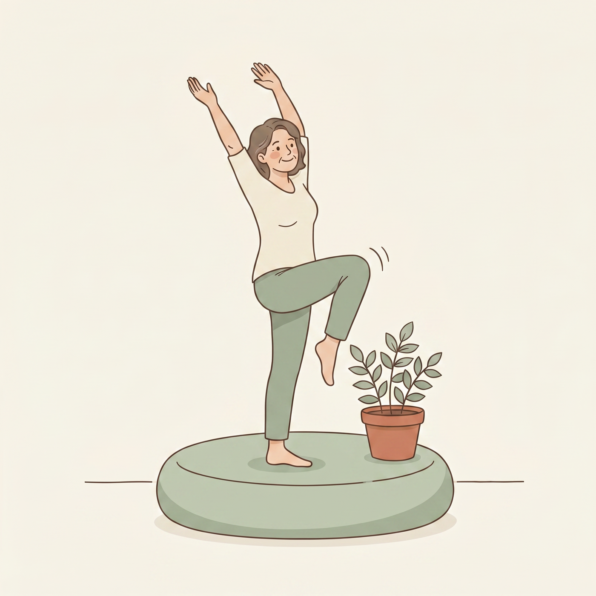
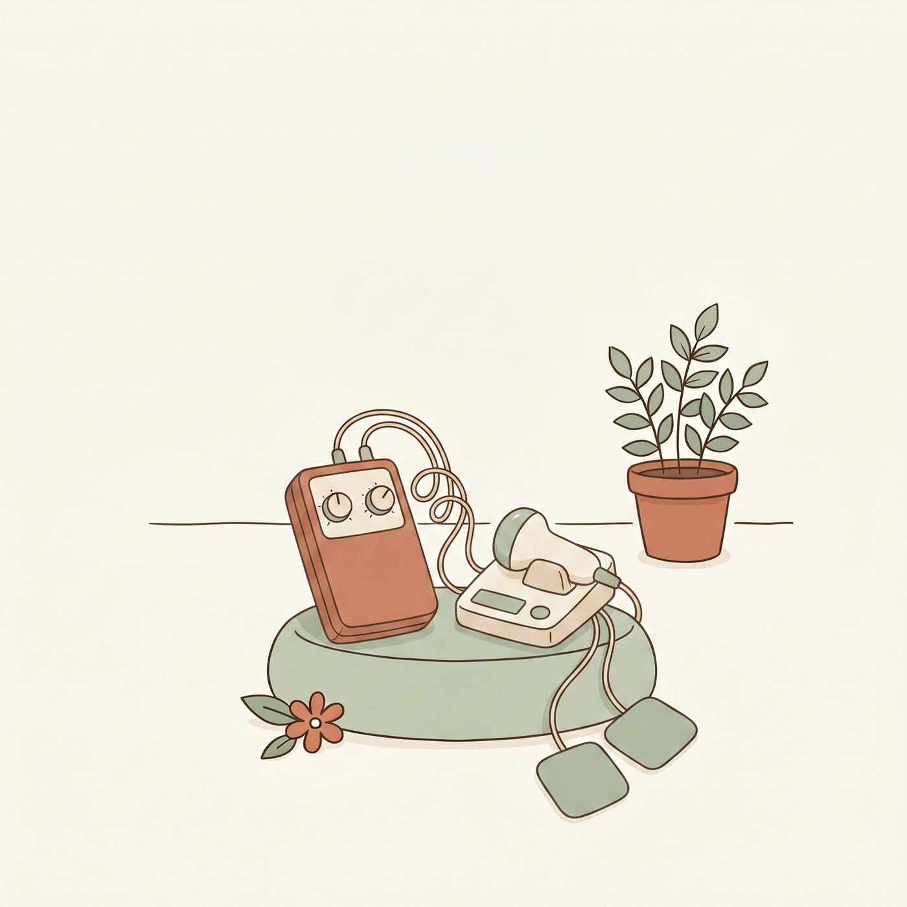

Movement is the back treatment with the most staying power, and a physiotherapist is the person who makes it yours. Here is what the evidence shows, what to expect, and why getting there early matters most.

A good physiotherapist does not just hand you exercises. They find your pattern, build a plan around it, and coach you until it sticks.
If there is one thing every major back pain guideline agrees on, it is this: the treatments that work best are active, not passive. The American College of Physicians puts exercise and physiotherapy led care first, ahead of medication, for ongoing back pain, and exercise is the option they grade most confidently.(1) Physiotherapy is simply the discipline that delivers that exercise well, matched to you.



Physiotherapy is not one technique. It is the umbrella that covers the exercise approaches with the best evidence for back pain, core and motor control training, directional (McKenzie) exercises, Pilates style work, and graded activity, plus education and hands on therapy where they help.(4) A physiotherapist’s job is to pick the right one for your pattern and progress it as you improve.
In the largest review of exercise for chronic low back pain ever done (249 trials), exercise reliably reduced pain, with moderate certainty evidence. More importantly, exercise is the only back treatment shown to keep helping after the program ends. Pills, heat, and hands on therapy fade when you stop. The skills a physiotherapist teaches you do not.(2)
When you see a physiotherapist matters almost as much as whether you see one. In a large study of adults with new back pain, those who saw a physiotherapist first, rather than starting with imaging or medication, went on to use fewer opioids, less advanced imaging like MRI, fewer emergency visits, and had lower overall costs across the following year.(3) Early, active care quietly steers you away from the path that leads to scans, injections, and pills you did not need.
The value is not the exercises themselves, it is the matching. Generic exercise sheets help far less than a program built for your pattern.(4) A good first block looks like this:

Spend your physiotherapy time mostly moving. The passive extras some clinics still offer, ultrasound, traction, and TENS, are not recommended for back pain by the major guidelines, because they do not change the outcome.(5) A short course of hands on therapy to get you moving is fine; weeks of lying on a table is not. If most of your visit is passive, ask for more active work and a home program.


Most people do well with a short, focused block, not endless appointments.
Ask for a physiotherapist who classifies your pattern, using a directional or mechanical framework (the Hamilton Hall or McKenzie approach) or motor control assessment. That one question tends to separate a tailored plan from a photocopied sheet.
Tick these off before and during your block so you get the most from it. Saved on this device.
Publicly funded physiotherapy is limited in most provinces, so many people pay privately or through insurance. If a full course is out of reach, you can still capture most of the benefit with a small assessment block to get your plan and pattern, plus a structured home or online program you run yourself. The goal is a good plan you keep doing, not a long string of visits.
For everyday mechanical back pain, physiotherapy is one of the safest and most effective things you can do. If anything above applies, let your clara care team know before starting.
This guide is for education and is not a substitute for your clara doctor’s advice. Your plan is personalised to you. Seek urgent care for new leg weakness, saddle numbness, or bladder or bowel changes.